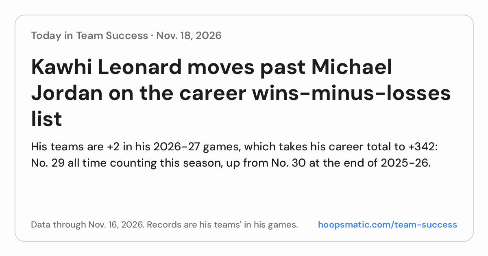

Kawhi Leonard moves past Michael Jordan on the career wins-minus-losses list
His teams are +2 in his 2026-27 games, which takes his career total to +342: #29 all time counting this season, up from #30 at the end of 2025-26. He has passed 2 players this season; the most decorated of them is Michael Jordan (+340).
Nov. 18, 2026. Data through Nov. 16, 2026 (last game in the nightly data).
Kawhi Leonard's page Career W − L board (completed seasons)
